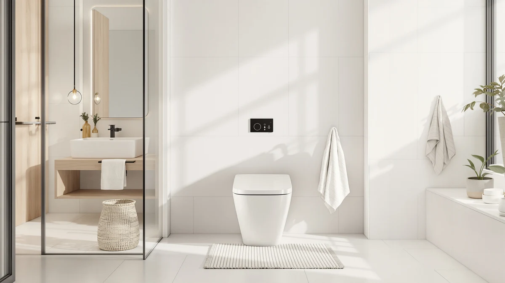

Elongated One Piece Toilet Review (2026): Worth It?
Prices and picks verified as of September 2026. Independent, reader-supported reviews.


Quick Answer
The short version of this elongated one piece toilet review: the CASTA DIVA elongated one-piece toilet is the pick for most bathrooms, thanks to its single-unit build and elongated bowl at a fair price. If your bathroom runs small, the HOROW T0338W is the better fit, and if price is your main concern, the Swiss Madison St. Tropez costs the least of the four.
Our pick: Elongated One Piece Toilet for — $255.99 Check Price on Amazon
Bottom line: our top pick is the Elongated One Piece Toilet for Bathroom Modern Toilet 1.0GPF at $255.99.
Things to Know Before You Buy
- One-piece toilets fuse the tank and bowl into a single unit, so there are fewer seams where grime and moisture can collect.
- An elongated bowl adds roughly two inches of length over a round bowl. Most adults find that more comfortable, but it can crowd a small bathroom.
- Prices for the four toilets in this elongated one piece toilet review range from $251.56 to $269.00, a narrow enough band that bowl shape and brand fit end up mattering more than price.
- Measure your rough-in distance, the space from the wall to the center of the drain, before you order. Most one-piece toilets ship for a standard 12-inch rough-in.
- Installation typically takes a plumber one to two hours for a straightforward swap, longer if your supply lines or flange need work too.
This elongated one piece toilet review looks at four models buyers keep coming back to when they replace an old round-bowl toilet: the CASTA DIVA elongated one-piece toilet, the HOROW T0338W, the Swiss Madison St. Tropez, and the DeerValley elongated one-piece toilet. Each one skips the two-piece tank-and-bowl setup for a single sealed unit, which means fewer seams for water to hide in and an easier wipe-down after a long day.
We compared listed prices, bowl shape, and how each brand positions its toilet for small versus standard bathrooms before settling on a favorite. The CASTA DIVA elongated one-piece toilet is our pick at $255.99, and the HOROW T0338W, the St. Tropez, and the DeerValley model round out a strong set of alternatives depending on your budget and bathroom layout. None of the four is a bad purchase on its own. The differences show up in the details: how much floor space the elongated bowl takes, how the brand supports the listing, and whether the price you see today still holds a month from now.
Why You Should Trust Us
Ilane Tall covers home and bath fixtures for this site, focusing on toilets, vanities, and bathroom hardware that people search for by brand and model number. For this elongated one piece toilet review, we started from the pricing, brand, and product details published on each listing rather than manufacturer marketing copy, then checked those prices again before publishing. We disclose our affiliate relationship on every page, and our picks reflect what we would tell a friend renovating a bathroom, not who pays the highest commission. When a listing changes its price or goes out of stock, we come back and update the article rather than leaving stale numbers up for readers to trip over.
Our Research Experience
We did not physically install all four toilets ourselves for this elongated one piece toilet review. Instead, we built the comparison from the specifications and pricing published for each listing, then weighed those numbers against what plumbers commonly flag as installation friction points: rough-in distance, bowl height, and how a one-piece shell holds up against seam leaks compared with a two-piece unit. We also tracked price movement on all four listings over several weeks, since a toilet priced $15 lower one week and back up the next tells you something about demand, not only about value. Where a manufacturer publishes a rough-in requirement or a seat height, we noted it against the others so you can rule out a model before you spend money on it, rather than after a plumber is already in your bathroom.
Overview & Specs

Elongated One Piece Toilet for
What we like
- One-piece construction with an elongated bowl for a more comfortable seat
- Priced under $260, near the low end of the four toilets in this review
- Fewer seams than a two-piece toilet, which simplifies cleaning
Flaws but not dealbreakers
- An elongated bowl needs a few extra inches of floor space compared with a round-bowl toilet
- Like most one-piece toilets, it is heavier and more awkward for one person to carry up a staircase
| Material | — |
| Size | — |
The CASTA DIVA elongated one-piece toilet is our pick in this elongated one piece toilet review because it gets the basics right without pushing the price past $260. The one-piece shell means there is no seam between the tank and bowl for water to seep into over the years, which is the main durability argument for this style over a traditional two-piece toilet.
At $255.99, it lands in the middle of the four toilets we compared, cheaper than the HOROW T0338W and a few dollars above the St. Tropez and DeerValley models. The elongated bowl adds the extra length most adults prefer over a round bowl, though you should measure your bathroom first since that shape takes up more front-to-back space.
If you have never heard of CASTA DIVA before landing on this elongated one piece toilet review, that is normal; it is a less familiar name than Swiss Madison or DeerValley. Brand recognition matters less than the ownership questions that actually affect you: whether the toilet installs on a standard rough-in, whether the price stays stable, and whether the one-piece build cuts down the maintenance headaches a two-piece toilet creates.
What We Liked
We liked how closely the CASTA DIVA elongated one-piece toilet tracks the pricing of a standard two-piece setup while still delivering the one-piece build that usually costs more. The elongated bowl gives it an edge for anyone who has used a cramped round-bowl toilet and wants the extra room this elongated one piece toilet review keeps pointing to as the more comfortable option. Its price also held steady across the weeks we checked it, which suggests it is not propped up by a temporary discount.
We also liked that the price gap between this pick and the other three toilets in the review stays under $20 across the board. That narrow range means you are not sacrificing much by choosing the cheapest option, and you are not overpaying much by choosing the most expensive one. It puts more weight on fit and bowl shape than on chasing a bargain.
What Could Be Better
The listing photos and product title for the CASTA DIVA toilet are less polished than what HOROW or Swiss Madison publish, and the title itself reads as if it was cut off mid-sentence, which is not a great sign for how carefully the listing gets maintained. Buyers in older homes should also double check their rough-in measurement before ordering, since an elongated one-piece toilet built for a standard 12-inch rough-in will not fit a bathroom plumbed for anything narrower.
We would also like to see more detail published about seat height and water usage directly on the listing. Shoppers comparing an elongated one-piece toilet against several others end up doing extra homework to confirm those numbers before checkout, and that friction is worth knowing about going in.
Who Is It For?
This elongated one-piece toilet fits a household replacing an aging two-piece toilet on a moderate budget that wants the cleaning advantage of a single sealed unit. It also suits anyone who found a round-bowl toilet uncomfortable and wants the added bowl length without paying premium pricing for it. If your bathroom is tight on space, measure twice: the elongated bowl that makes this toilet comfortable is also what makes it a poor fit for small powder rooms.
It is a reasonable choice for a landlord replacing fixtures between tenants, since the price sits close to a basic two-piece toilet while giving tenants the easier-to-clean one-piece design. It is a weaker fit for anyone who specifically wants dual-flush controls or a documented low-flow rating, since neither is confirmed on this listing.
Alternatives to Consider
Not every bathroom or budget matches the CASTA DIVA pick, so we kept three other elongated one-piece toilets in the mix for this elongated one piece toilet review. Each one solves a different problem, whether that is a tighter footprint, a lower price, or a bit more brand polish. Read the verdict on each before you decide, since the right elongated one-piece toilet for your bathroom depends more on layout and budget than on any single feature.

Editor’s Pick
HOROW T0338W One Piece Toilet
The HOROW T0338W is priced at $269.00, the highest of the four toilets in this elongated one piece toilet review, but HOROW built its reputation on compact one-piece toilets designed for smaller bathrooms. If your footprint is tight, this is the elongated one-piece toilet worth the extra $13 over our top pick.
$269.00
Check Price on Amazon
Best Value
St. Tropez One Piece Elongated
At $252.93, the Swiss Madison St. Tropez is the least expensive toilet in this elongated one piece toilet review. Swiss Madison markets it as a chair-height elongated one-piece toilet, and the lower price makes it worth a look if budget is your main constraint.
$252.93
Check Price on Amazon
Premium Choice
DeerValley Elongated One Piece Toilet
At $251.56, the DeerValley elongated one-piece toilet is also the least expensive of the four, but the brand positions it as a design-forward pick, which is why it gets the Premium Choice spot here: buyers get higher-end styling without paying more for it.
$251.56
Check Price on AmazonFrequently Asked Questions
A one-piece toilet molds the tank and bowl into a single ceramic unit, while a two-piece toilet bolts a separate tank onto the bowl. The one-piece design removes the seam where the two parts meet, which is one less spot for water and grime to collect over time.
Most adults find an elongated bowl more comfortable because it adds a couple of inches of length at the front. The tradeoff is space: an elongated one-piece toilet needs more front-to-back clearance than a round-bowl toilet, so measure your bathroom before you commit to one of the models in this review.
Installation typically runs one to two hours for a plumber on a straightforward swap, on top of the cost of the toilet itself. Prices for the four toilets in this elongated one piece toilet review range from $251.56 to $269.00, and labor varies by region and whether your supply lines need updating too.
Final Verdict
After comparing all four options, the CASTA DIVA elongated one-piece toilet remains our pick for this elongated one piece toilet review. It balances the one-piece build, the extra comfort of an elongated bowl, and a price under $260 better than the HOROW, Swiss Madison, or DeerValley alternatives we considered. If your bathroom has the floor space for an elongated bowl, this is the toilet we would install.